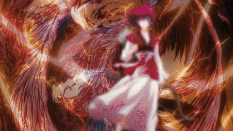

Yona is the only princess of the Kouka Kingdom. Due to her mother's death
when she was younger, she was primarily raised around her best friends, Hak and
Soo-Won. However when one of them kills her father and she is forced to flee
from the palace, she decides to become strong enough to protect herself.
Hak
Hak is one of Yona's childhood friends, and her bodyguard.
He is an orphan but was adopted by the former Wind Tribe general, Son Mundok,
and became the new general. Hak is known around Kouka as the 'Thunder Beast'
for his lightning-fast reflexes and speed, and is called the strongest
soldier in the kingdom.

Soo-Won
Soo-Won is Yona's cousin as well as Hak's best friend.
He hides his true intelligence beneath his clumsy appearance while around
others. His father was killed by the Yona's father, the king, and his anger
led him to conspire to kill the king and take over the throne. Even though
he has said he will stop anyone who gets in his way, his actions show he still cares about
Yona and Hak.